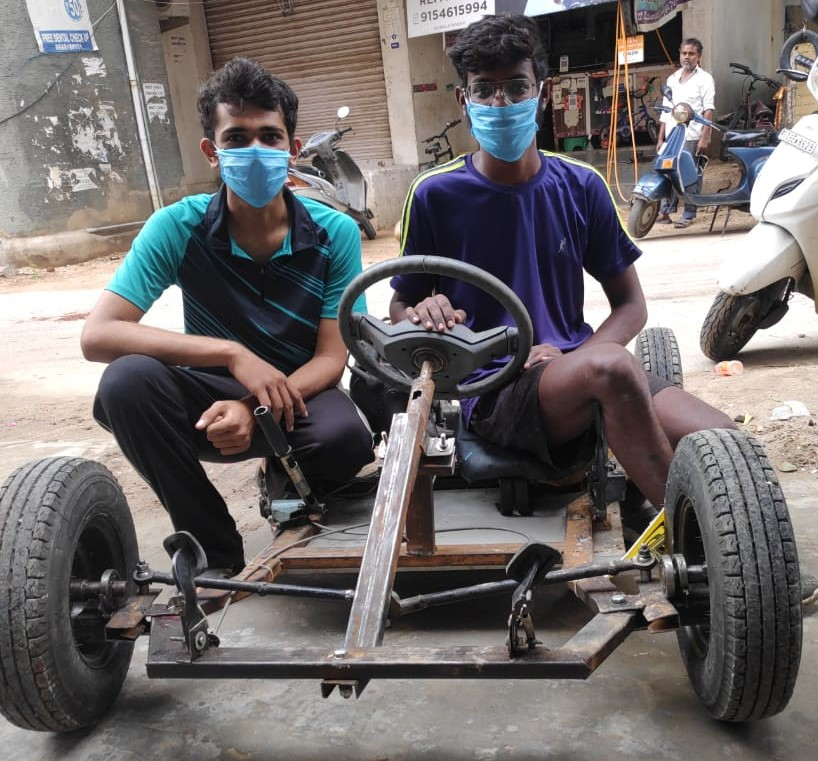
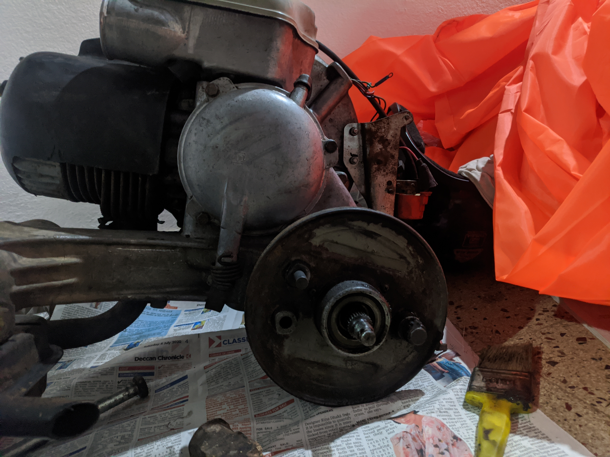
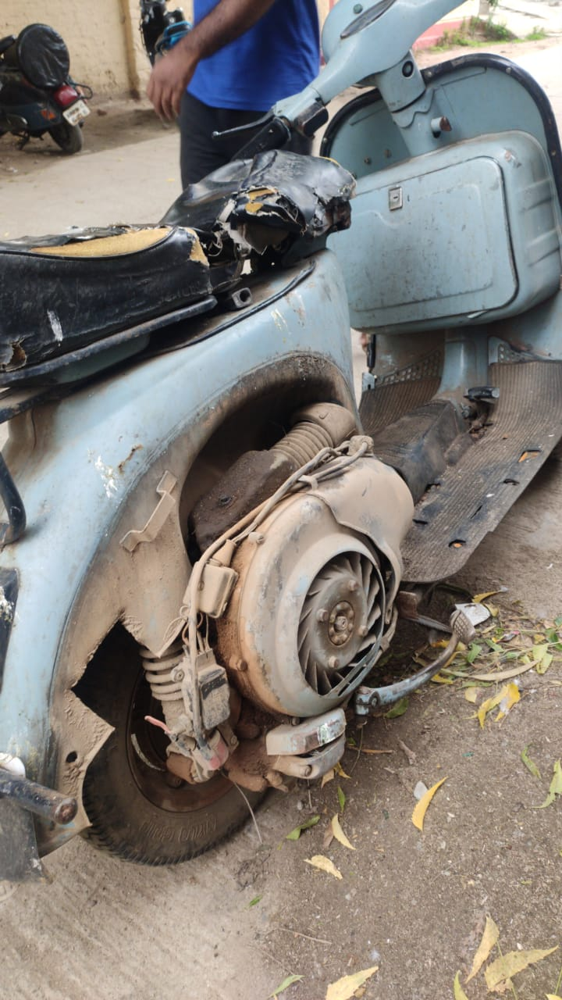
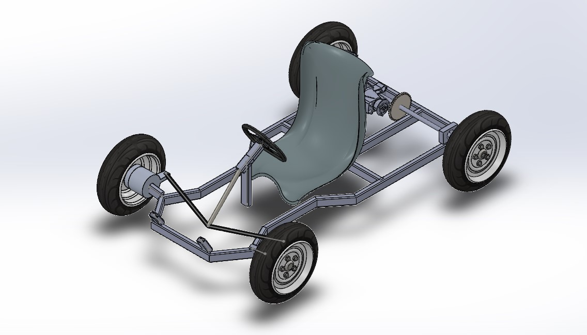
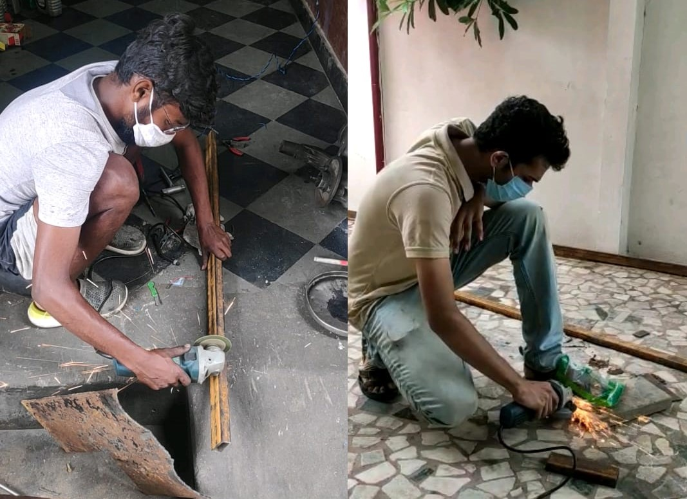
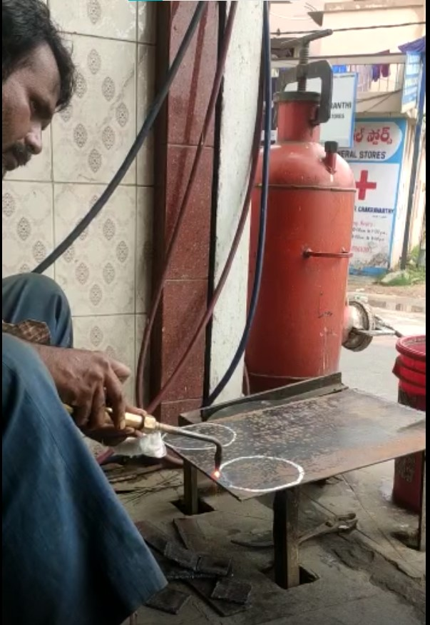
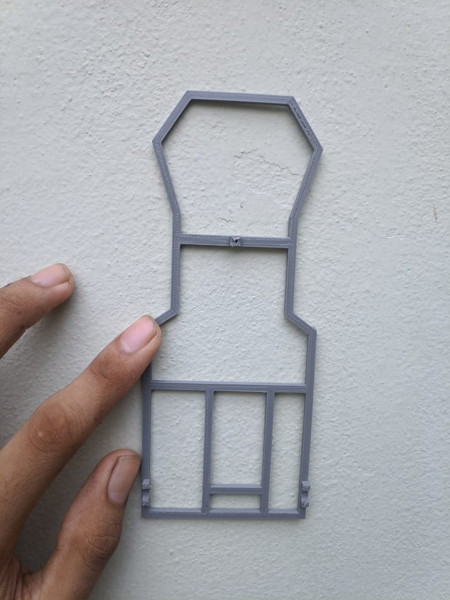
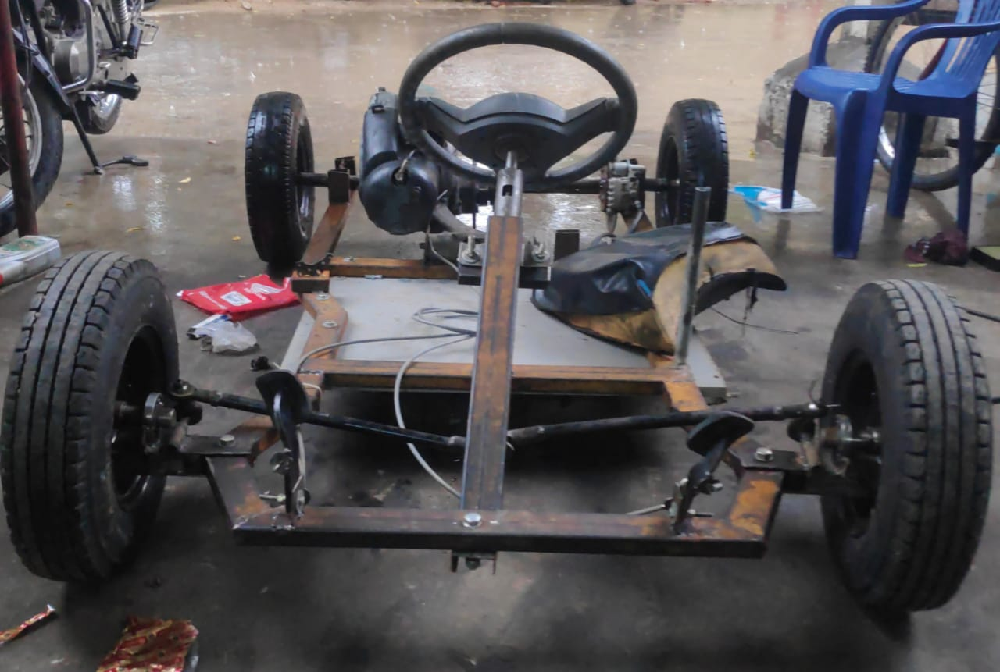
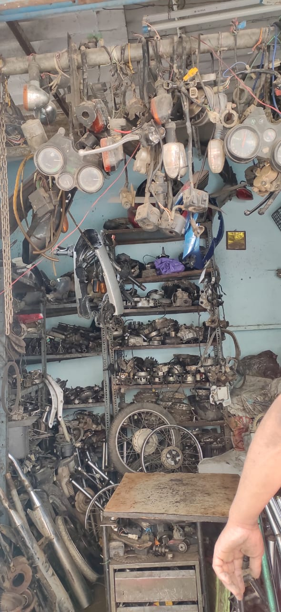

How we built a go kart during a global pandemic
Why we built this go kart
Everyone has driven go karts at race tracks but has always wanted to build their own. Since the early days of college, Yaseen and I have always talked about a cool project we could try to do together, as we both wanted to learn practically rather than just reading for an exam. He had already helped me build my Penplotter before, as he knew all about finding the right parts and places. On a random day during lockdown, one came across a YouTube video of a person making their own go karts. I shared it with Yaseen. We then discussed if this kind of project is feasible, though. He knew where we could get the engine, estimated the cost of everything, and I have been trying to learn how to use it. I have had SolidWorks for the past year so that I could use it with my 3D printer. I got Last year With this knowledge of SolidWorks, I could make a basic design of the go kart.


Sourcing the engine


Designing the frame of the go kart
This part is the most important for making anything. Using SolidWorks, we started designing the frame with the minimum knowledge and referring to other frames from the official racing organizations' go karting manual and homemade builds made by random internet users.
We spent a few days designing a bare bone frame but couldn't figure out what dimensions we had to use as we didn't have parts for the go kart.

Next day we went to several markets for search of used parts such as tyres, steering pedals for the accelerator, clutch and brake.
Looking for used parts in markets

We mainly found our steering, pedals, and axle in the Afzal Gunj market. Other parts were sourced from the scrap yards of Malakpet and Karmanghat. Although we couldn't find a few parts for our specifications, we had to adapt in unconventional ways.
Once we had almost all the parts we wanted, we had the biggest challenge. We had to cut our metal rods to our dimensions using the equipment we had and get them welded as we didn't own an arc welding machine.


Boring operation being done for the axle and the hubs of the tyres.
Once we had all the parts ready to assemble, we had to cut our rods to the specific dimensions as the chassis is the most important part of any moving vehicle.
Getting the frame Welded.

It was day 15 by this point, and we had finished the majority of our work. All we had to do was arrange the cables, pedals, seat the exact positions for the steering, gear rod, and some minor quirks.

Technical specifications of our kart
We had to improvise and adapt for whatever materials we could locate easily and for a decent price. Most of the parts which were used are refurbished and resold in the vast markets of hyderabad.
- The Go Kart is powered by a Chetak 150CC engine which produces about 7.5BHP when new.
- The frame is made out of two 2x3 inch steel rods that were 20 feet long and weighed around 25 kg combined.
- Four tyres and hubs were salvaged from an auto rickshaw.
- The axle which was used was the steering column of a truck, which had to be processed on a lathe later to fix the imperfections.
- We used the disc break and its left-over leaver from a Bajaj Pulsar.
- The chain sprocket set is also from a Bajaj Pulsar 220cc variant.
- Finding wheel bearings for the front steering column was difficult and expensive in the markets of Afzal Gunj. The bearings used for the tyres are standard chetak bearings.

Problems faced
As there was a pandemic, we had to be very careful and it was very risky to go to the crowded markets several times to buy spares. The merchants in the markets always tried to sell their parts at a premium as we were young. Some of the parts that we bought didn't function as intended, so we had to buy them again, which increased the budget of this project. We had to manage with the tools we had and for other
Due to our ignorance, we had to buy a second engine. The angle wasn't correct and it got jammed. Thanks to Yaseen's father's contacts, we were able to find another refurbished engine. We had to make last minute changes in our frame and get some parts of the frame re-welded and change the position of the seat, which increased the budget of this project.

Conclusion
We are proud that we were able to build a working go kart from scratch. We have learned a lot about the sources of finding the parts for the parts and the prices of raw materials. We would never be able to accomplish this without a pandemic, as we would be trying to listen to a theoretical class in college. We also learned that until we try to do something practically, we will not be able to understand the real problems. Before we started this project, we estimated that it would be completed within 10 days, but it took way longer and was more difficult than expected. We also hope more people try to make big projects like this one or small autonomous vehicles. We should also thank our parents for their support and for agreeing to bear the cost of the project during one of the worst economic recessions in history.
As this is our first attempt at trying to build a complex four-wheeler, there are a few flaws in the design and structure which have room for improvement.
We have plans to improve this frame and also convert it into an electric powered vehicle. We wanted to add autonomous capabilities such as anti-collision detection using Facebook's "pytorch", which is a platform for machine learning, but couldn't be done as this had already gotten a bit too expensive. It's very difficult, even for multinational companies, to implement such features on manual transmission combustion engines.